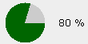

HTML_Progress_UI::drawCircleSegments
draws each of pictures for circle and/or ellipse progress meter Synopsisrequire_once 'HTML/Progress/UI.php';
mixed HTML_Progress_UI::drawCircleSegments(
string $dir = '.'
string $fileMask = 'c%s.png') DescriptionThis method is used to create each circle/ellipse segment picture.
$dir is the path to final destination of pictures creates by the GD library.
$fileMask is a template filename to build each picture segment.
Parameter- string
$dir
-
directory where pictures should be created.
- string
$fileMask
-
mask for picture filename (sprintf format).
ThrowsPossible PEAR_Error values | Error level |
Error code |
Error message |
Solution |
| exception |
HTML_PROGRESS_ERROR_INVALID_INPUT |
invalid input, parameter #1 "$dir" was expecting "string" |
Fixed the cast of parameter |
| exception |
HTML_PROGRESS_ERROR_INVALID_INPUT |
invalid input, parameter #2 "$fileMask" was expecting "string" |
Fixed the cast of parameter |
Note( HTML_Progress >= 1.2.0RC1, Image_Color >= 1.0 )
 | This function can not be called statically. |
SeeHTML_Progress_UI::setCellAttributes
ExampleExample below will produced picture segments for a plain circle progress meter.
 |  |
- <?php
- require_once 'HTML/Progress.php';
-
- $bar = new HTML_Progress(HTML_PROGRESS_CIRCLE);
-
- $ui =& $bar->getUI();
- $ui->setStringAttributes('background-color=#eeeeee');
- $ui->setCellAttributes(array(
- 'width' => 50,
- 'height' => 50,
- 'spacing' => 0,
- 'background-color' => '#EEEEEE'
- ));
-
- $dir = '../temp';
- $fmask = 'c%s.png';
-
- if (file_exists("$dir/c0.png")) {
- // uses cached files rather than create it again and again
- foreach (range(0,10) as $index) {
- $ui->setCellAttributes(
- array('background-image' => sprintf($dir.$fmask, $index)),
- $index
- );
- }
- } else {
- // creates circle segments pictures only once
- $ui->drawCircleSegments($dir, $fmask);
- }
- ?>
| Prev |
Up |
Next |
| HTML_Progress_UI::getStyle |
Reference Guide |
HTML_Progress_Monitor::notify |
|
|